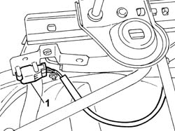
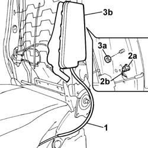

5580C44 front side bag module one lh or rh r r
- Path
- Procedures > 55 ELECTRICAL EQUIPMENT > 5580 SPECIAL ACCESSORIES > 5580C air bag system > 5580C44 front side bag module one lh or rh r r
- Kind
- repair procedure (removal / refitting; the operation number is the code)
- Applies to
- all engines; all production periods
- Interactive page
- https://sloeber94.github.io/elrnDB-fPnd/en/#/2753013
Applies to: all engines; all production periods
Applies to: all engines; all production periods
 Removing
Removing
 Refitting
Refitting7045A13 front seat with side bag r r
7045D31 Front seat BACKREST COVER, left or right - R.R. with seat removed
1. Disengage the side Air Bag module electrical connector which is press-fitted on its bracket.
Release the electrical wiring from the fixing bands on the seat frame.

Applies to: all engines; all production periods
1. Release the electrical wiring from the press-fit fixing band on the squab balljoint.
2. Undo the fixing nut (2a) and disconnect the earth lead (2b) from the seat squab frame.
3. Undo the remaining nut (3a) and remove the side bag module (3b) complete with wiring.

Applies to: all engines; all production periods
Place the Air Bag module in the special cupboard, resting it on a free surface with the flat surface facing upwards.
Applies to: all engines; all production periods
Refitting
RemovingObserve the following precaution.
If a new module is being fitted, attach the labels. Detach the removable part of the adhesive label from the new module and put it in a specific file recording the vehicle details (model, registration data, chassis no.) and the serial no. of the old module. This file should be kept for future checks. A new label is supplied together with the module, to be stuck on top of the existing one. However, it should first be perforated to indicate the month and 14 years after the year when the module is fitted (e.g. 2017 will correspond to 2003).
Check visually for deformation or cracks in the seat frame.
Check that the impact slots are not deformed.
Check the condition of the seat balljoint.
Check the squab for torsional deformation by measuring the diagonals of the squab frame.
Check that the measurements are the same and that the diagonals intersect at the centre of the squab.
Move the seat through all its various settings to ensure that movements take place without binding or noise.
Fit the side bag module in its seating on the frame, position the earth lead correctly and tighten the fixing nuts.
Position the wiring correctly and secure it to the squab frame and seat frame using the specific press-fitted clips.
Position the side bag module electrical connector correctly on the mounting bracket.
7045D31 Front seat BACKREST COVER, left or right - R.R. with seat removed
7045A13 front seat with side bag r r
Connect the battery terminals.
Check the operation of the system using the Examiner or another tester.
Topics linked from this page (2)
- 7045A13 front seat with side bag r r
- 7045D31 Front seat BACKREST COVER, left or right - R.R. with seat removed